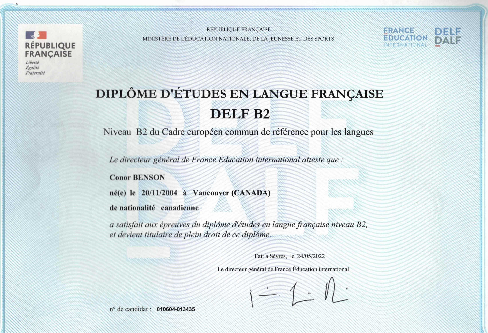
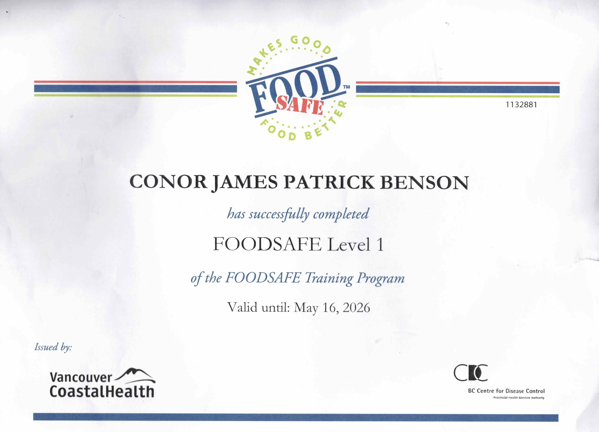

Delf B2
In 2022 I took and passed the Delf at a B2 level. The Delf is a Diploma that certifies the French competency of those outside of France. The B2 level certifies my fluency of the French language.

FoodSafe Level 1
In 2021 I received my BC FoodSafe level 1 certificate. This certifies my ability to handle and work with food in a restaurant environment safely.